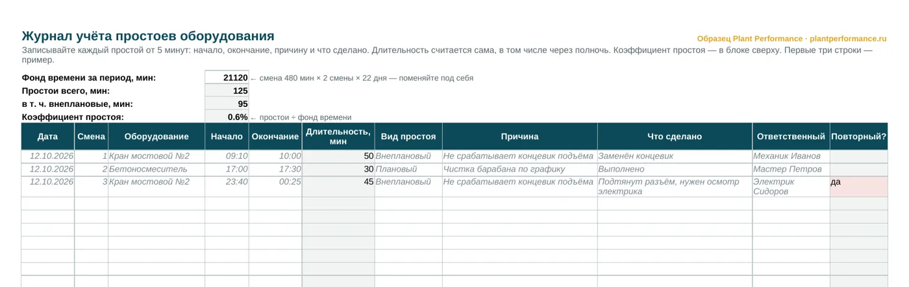
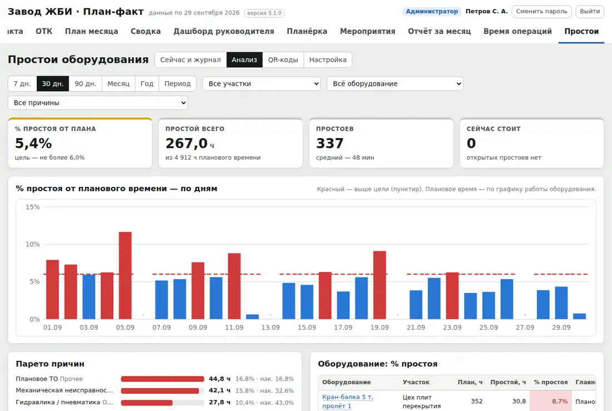

Plant Performance / Образец: журнал простоев
Бесплатный образец
Журнал учёта простоев оборудованияобразец в Excel с расчётом коэффициента простоя — скачать бесплатно
Простой оборудования, который не записан, для завода не существует: его не разбирают и не устраняют. В этом журнале длительность простоя и коэффициент простоя считаются сами, а повторный простой по той же причине на том же оборудовании подсвечивается красным.
Файл Excel, 36 КБ, без регистрации. Открывается в Excel и LibreOffice, печатается на А4.
Это простая форма — чтобы начать. Есть полная версия: справочник оборудования и причин простоя, свод по каждому станку с коэффициентом простоя и доступностью, диаграмма Парето причин. Пришлём бесплатно — напишите в Telegram или позвоните.
А в программе «План-факт» всё это уже заложено и считается само.

Что в журнале
- Дата, смена, оборудование, начало и окончание простоя
- Длительность в минутах — считается сама, в том числе через полночь
- Вид простоя: плановый или внеплановый
- Причина, что сделано, ответственный
- Отметка «повторный»: та же причина на том же оборудовании уже была
- Сверху — фонд времени, простои за период и коэффициент простоя
Как считать простой оборудования
- Длительность = окончание − начало.
- Фонд времени = длительность смены × смен в сутки × рабочих дней.
- Коэффициент простоя = минуты простоя ÷ фонд времени.
- Доступность = 1 − коэффициент простоя. Это первый множитель OEE — общей эффективности оборудования.
- Плановые простои (ТО, переналадка) и внеплановые считайте отдельно — разбирают внеплановые.
Как вести учёт простоев, чтобы он работал
Журнал полезен, только если в нём правда.
- Записывать каждый простой от 5 минут. Мелкие простои за смену складываются в часы.
- Записывает оператор в момент события, а не мастер в конце смены по памяти.
- Причина — конкретная. Не «сломалось», а «не срабатывает концевик подъёма».
- Плановые — отдельно. Иначе ТО и переналадка прячут настоящие потери.
- Раз в неделю — Парето причин. Обычно две-три причины дают больше половины простоев — с них и начинать.
- Повторный простой — сигнал: устранили следствие, а не причину.
Простой — с телефона, свод — к совещанию
Бумажный журнал заполняют в конце смены, по памяти и «примерно». Минуты теряются, причины размываются, а свод к совещанию собирать некому.
В программе «План-факт» оператор отмечает простой с телефона по QR-коду на оборудовании, причина выбирается из списка, а доля простоев от планового времени и Парето причин готовы к утреннему совещанию.

Напишите нам
Расскажите в двух строках, что за завод и что хотите посмотреть или автоматизировать. Ответим, покажем программу в работе и пришлём документы, которых нет на сайте.